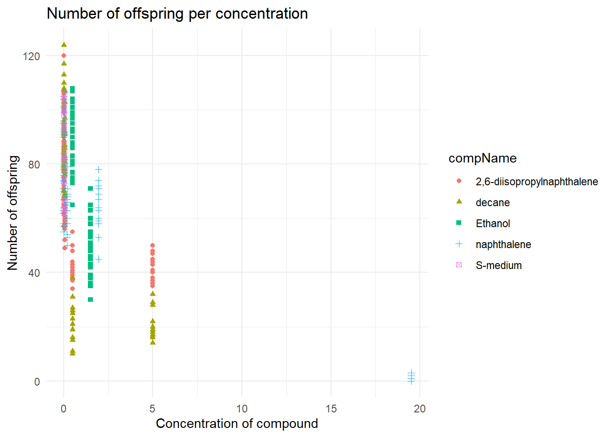
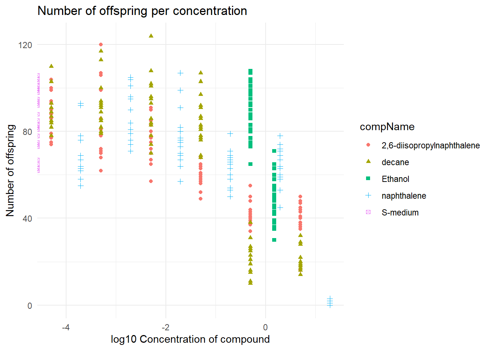

2 Example Data Analysis
###Assignment 1.1
#install.packages(readxl)
#install.packages(tidyverse)
library(readxl)
library(tidyverse)
library(here)RawData: dbl compName: chr compConcentration: chr
compConcentration is niet goed geimporteerd en zou een dbl moeten zijn.
#compConcentration in numeric veranderen
data$compConcentration <- as.numeric(data$compConcentration)## Warning: NAs introduced by coercion#grafiek maken
ggplot(data = data, aes(x = compConcentration, y = RawData)) +
geom_point(aes(color = compName,
shape = compName))+
labs(title = "Number of offspring per concentration",
y = "Number of offspring",
x = "Concentration of compound") +
theme_minimal()## Warning: Removed 6 rows containing missing values (geom_point). E: in de plot is compConcentration al naar een nummer veranderd. als dit niet zou gebeuren zou de x-as onleesbaar worden, ook wordt het dan moeilijk te zien wat de concentratie is.
#compConcentration in numeric veranderen
data$compConcentration <- as.numeric(data$compConcentration)
#grafiek maken
ggplot(data = data, aes(x = log10(compConcentration), y = RawData)) +
geom_point(aes(color = compName,
shape = compName, position = "jitter"))+
labs(title = "Number of offspring per concentration",
y = "Number of offspring",
x = "log10 Concentration of compound") +
theme_minimal()## Warning: Ignoring unknown aesthetics: position## Warning: Removed 6 rows containing missing values (geom_point). Nog niet hellemaal duidelijk hoe jitter werkt.
- The positive control for this experiments is Ethanol. (H) The negative control for this experiment is S-medium.
I: Eerst testen of de data normaal verdeeld is per stof doormiddel van een shapiro-wilk. Vervolgens een levene-test uitvoeren om te testen voor variatie. Hierna kan een T-test uitgevoerd worden ten over de positieve controle (ethanol) met elke stof.
#data filteren op de negatieve controle
data_negative <- data %>% filter(data$expType == "controlNegative")
#De gemiddelde berekenen van het rawdata colom van de negative controle
mean_negative <- mean(data_negative$RawData, na.rm = TRUE)
#De data normaliseren op basis van het gemiddelde van de negatieve controle
data$RawData <- data$RawData - mean_negative
#grafiek maken
ggplot(data = data, aes(x = log10(compConcentration), y = RawData)) +
geom_point(aes(color = compName,
shape = compName, position = "jitter"))+
labs(title = "Number of offspring per concentration Normalised",
y = "Number of offspring",
x = "log10 Concentration of compound") +
theme_minimal()## Warning: Ignoring unknown aesthetics: position## Warning: Removed 6 rows containing missing values (geom_point). Ik vermoed dat ik of een foute negatieve controle heb gebruikt of dat ik de data four heb genormaliseerd
Ik vermoed dat ik of een foute negatieve controle heb gebruikt of dat ik de data four heb genormaliseerd
K: Nu is de data van de negative controle er afgehaald, wat altijd de bedoeling want de negatieve controle zou geen effect moeten hebben